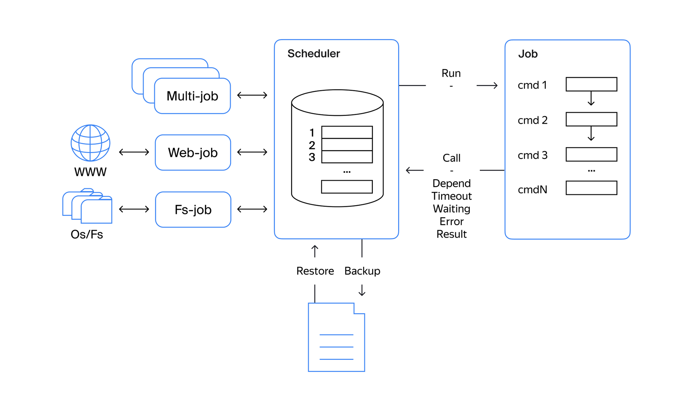

Проектное задание второго спринта
Спроектировать и реализовать планировщик задач для выполнения поступающих задач.
Документация
Документация по этому проекту доступна благодаря использованию документатора MkDocs.
-
Посмотреть онлайн
-
Посмотреть офлайн:
- файлы markdown - в папке
docs/ - как сайт -
site/index.html
- файлы markdown - в папке
Также сайт может генерироваться "на лету" при помощи команды
Описание задания
1. Описать реализацию класса Scheduler.
Условия и требования: - Планировщик одновременно может выполнять до 10 задач (дефолтное значение, может быть изменено). - Возможность добавить задачу в планировщик и запустить её в рамках ограничений планировщика и настроек, указанных в задаче. - При штатном завершении работы планировщик сохраняет статус выполняемых и ожидающих задач. - После рестарта восстанавливается последнее состояние и задачи продолжают выполняться.
2. Описать реализацию класса Job.
Условия и требования: - У задачи может быть указана длительность выполнения (опциональный параметр). Если параметр указан, то задача прекращает выполняться, если время выполнения превысило указанный параметр. - У задачи может быть указано время запуска (опциональный параметр). Если параметр указан, то задача стартует в указанный временной период. - У задачи может быть указан параметр количества рестартов (опциональный параметр). Если в ходе выполнения задачи произошёл сбой или задачи-зависимости не были выполнены, то задача будет перезапущена указанное количество раз. Если параметр не указан, то количество рестартов равно 0. - У задачи может быть указаны зависимости — задача или задачи, от которых зависит её выполнение (опциональный параметр). Если параметр указан, то задача не может стартовать до момента, пока не будут завершены задачи-зависимости.
3. Проверить работу планировщика на различных задачах.
Условия и требования: - работа с файловой системой: создание, удаление, изменение директорий и файлов; - работа с файлами: создание, чтение, запись; - работа с сетью: обработка ссылок (GET-запросы) и анализ полученного результата; - описать конвеер выполнения основной задачи минимум из 3 задач, зависящих друг от друга и выполняющихся последовательно друг за другом.
Требования к решению
- Используйте корутины и генераторы, изученные в теоретической части.
- Использование потоков и процессов не запрещено.
- Использование
asyncioзапрещено. - Используйте встроенные библиотеки и модули языка.
- Используйте концепции ООП.
- Используйте аннотацию типов.
- Логируйте результаты действий.
- Предусмотрите обработку исключительных ситуаций.
- Приведите стиль кода в соответствие pep8, flake8, mypy.
Рекомендации к решению
- Покройте написанный код тестами.
- Для хранения статуса задач или планировщика используйте
.lock-файлы и иные текстовые форматы — например,txtилиjson. - Организуйте структуру хранения задач и/или их зависимостей в рамках отдельных директорий с определенным наименованием, используя
uidили кастомный шаблон. Использование ссылок (symlink) не запрещено. - Сигнатура описания классов может быть изменена под ваше усмотрение. Создавать дополнительные классы не запрещено.
- Используйте примитивы синхронизации, например, Timer или Condition.
- По возможности, решение должно полностью строиться на использовании корутин.
Схематично сервис представлен на диаграмме{target="_blank"}. 
{kind=link}